Introdução: O Papel do Terroir

A qualidade e o estilo de um vinho são moldados, fundamentalmente, pelo conceito de terroir, um termo francês que designa o conjunto de fatores naturais e humanos que influenciam o perfil da uva e, por consequência, do vinho. Terroir não é apenas solo, mas uma interação complexa entre clima, microclima, relevo, tipo de solo, orientação das vinhas, práticas culturais e tradições humanas.
Clima e Microclima

O clima é um dos elementos centrais do terroir. Ele determina o ritmo do ciclo vegetativo, a maturação das uvas e o equilíbrio entre acidez e açúcar. O microclima, por sua vez, refere-se às condições específicas de uma pequena área, podendo até ser delimitado por uma encosta, parcela ou vinha individual. Ainda mais localizado é o chamado micro-microclima, influenciado por barreiras vegetais, proximidade a corpos d'água, muros, entre outros.
Alterações climáticas e seus efeitos:
- Água e Irrigação: O déficit ou excesso hídrico afeta a concentração de açúcares e compostos fenólicos.
- Exposição Solar e Temperatura: A exposição ideal permite fotossíntese eficiente. Altitudes mais elevadas moderam o calor e aumentam a amplitude térmica, favorecendo a acidez. Já altitudes mais baixas tendem a produzir vinhos mais alcoólicos e maduros.
- Orientação das vinhas: Encostas voltadas a sul (no hemisfério norte) recebem mais luz solar, promovendo maior maturação.
- Rios e lagos regulam a temperatura do entorno por reflexão e evaporação, influenciando o microclima das vinhas próximas.
Solo

O solo fornece à videira sustentação, água e nutrientes. Sua composição física e química afeta o desenvolvimento radicular, a absorção de nutrientes e a regulação hídrica. Entre os principais tipos de solo:
- Calcário: Vinhos com boa acidez, minerais.
- Xisto: Vinhos ricos, com notas de especiarias.
- Granito: Minerais e especiados.
- Argiloso: Tendem a gerar vinhos quentes, com fruta madura, menor acidez.
- Vulcânico: Vinhos potentes, minerais, com especiarias.
A temperatura do solo, sua fauna microbiana e os recursos hídricos influenciam diretamente o vigor e profundidade das raízes. O controle de humidade e temperatura do solo também é essencial para evitar doenças e manter a videira saudável.
Interação Humana
A tradição cultural, as práticas de viticultura e a filosofia do produtor têm impacto profundo no vinho. Desde a escolha da casta até o método de vinificação, o fator humano fecha o ciclo do terroir.
Perfis Climáticos dos Vinhos Portugueses
Portugal apresenta grande diversidade de estilos vitivinícolas influenciados por clima, relevo e solo.
Vinhos Atlânticos (Norte e Litoral)
|
Ex.: Vinhos Verdes, Bairrada, Lisboa, Açores, Madeira
|
Vinhos de Montanha (Interior Norte)
|
Ex.: Douro, Dão, Trás-os-Montes, Beira Interior, Norte do Alentejo
|
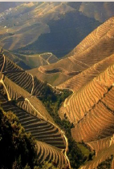 |
Vinhos de Planície (Centro e Sul)
|
Ex.: Tejo, Setúbal, Alentejo Centro e Sul, Algarve
|
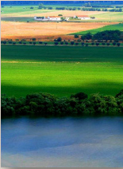 |
Impacto da Vindima e do Clima no Perfil Sensorial
Ano Quente
- Maturação rápida, colheita tardia com risco de sobrematuração
- Aromas de figo, uva passa e compotas
- Boca quente, doce, alcoólica, com risco de desequilíbrio
Ano Frio
- Maturação incompleta, risco de notas verdes
- Aromas de pimentão verde, ervas frescas, espinafre
- Acidez alta, taninos adstringentes e amargos
- Necessário equilíbrio com fruta e flores para agradar
Ano Podre
- Uva podre, "mofada", nenhuma hipótese de vinho satisfatório
- Notas de sujo, pó, decomposição podre
Grande Ano
- Fruta perfeita na maturidade, sem característica de mofo ou vegetal
- Aromas ricos em frutas, flores, ervas aromáticas
- Evolução para aromas de bosque, especiarias, compota, notas animais
Análise Visual
Vinhos Brancos
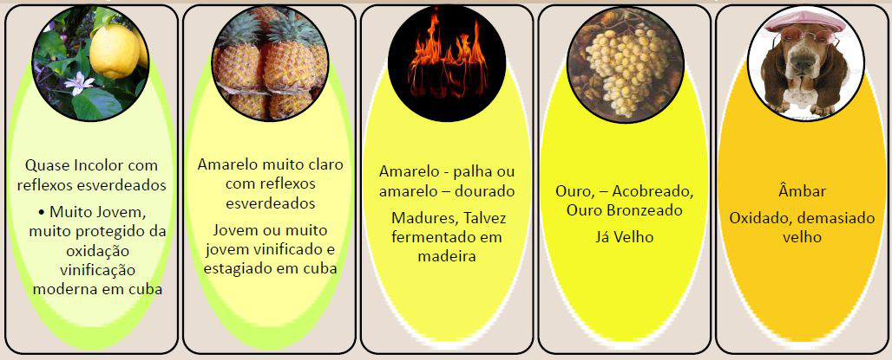
- Incolor com reflexos esverdeados: Muito jovem, protegido da oxidação
- Amarelo claro com reflexos esverdeados: Jovem, fermentado em cuba
- Amarelo-palha / dourado: Maduro, possivelmente fermentado em madeira
- Ouro acobreado / bronzeado: Envelhecimento avançado
- Âmbar: Oxidação evidente, vinho velho
Classificação por corpo (brancos)
| Pouco encorpado: Amarelo a verde pálido prateado brilhante. Maior acidez. Ex.: Pinot Grigio, Albariño, Muscadet | 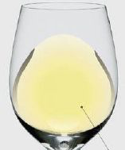 |
| Encorpado: Dourado pálido platinado brilhante. Acidez moderada. Ex.: Sauvignon Blanc, Trebbiano, Chenin Blanc | 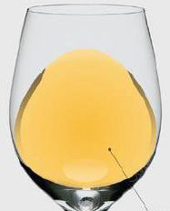 |
| Muito encorpado: Amarelo ocre bronze brilhante. Baixa acidez, sabores suaves. Ex.: Chardonnay, Viognier, Semillon | 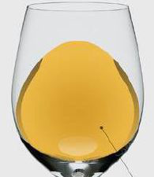 |
Idade do vinho branco
| Vinhos Novos: Cor saturada, brilho amarelo a verde. Alta acidez e sabores frescos. | 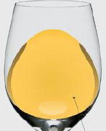 |
| Vinhos Envelhecidos: Cor baça, mais desbotada, amarelo e castanho. Acidez diminui, surgem notas terciárias de noz. | 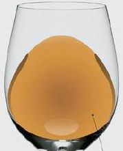 |
Vinhos Tintos
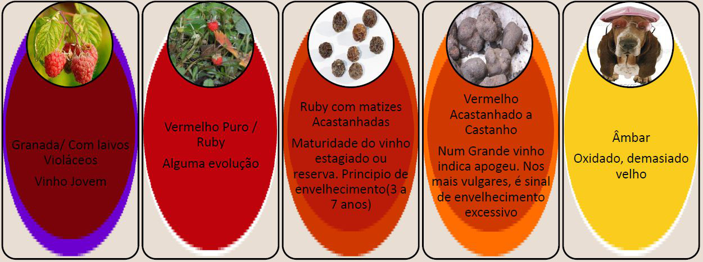
- Rubi com auréola violeta: Vinho jovem
- Vermelho puro / rubi: Alguma evolução
- Rubi com reflexos acastanhados: Estágio em madeira, início do envelhecimento (3 a 7 anos)
- Vermelho acastanhado a castanho: Apogeu ou declínio, dependendo da qualidade
- Âmbar: Oxidado, geralmente envelhecimento excessivo
Classificação por corpo (tintos)
| Pouco encorpado: Anel largo, transparente. Poucos taninos, alta acidez. Ex.: Pinot Noir, Gamay | 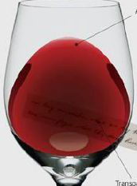 |
| Encorpado: Anel médio, semi-transparente, interior opaco. Taninos moderados, acidez média. Ex.: Tempranillo, Merlot, Sangiovese | 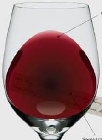 |
| Muito encorpado: Amarelo ocre bronze brilhante. Alto nível de taninos, baixa acidez. Ex.: Syrah, Malbec, Cabernet-Sauvignon | 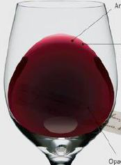 |
Idade do vinho tinto
| Vinhos Novos: Anel fino, cores ricas, mais opacas, violeta-vermelho. Máximo de taninos, acidez e aromas frutais. | 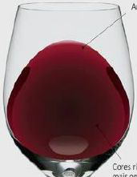 |
| Vinhos Envelhecidos: Anel largo, grande variação de cores, cor baça, transparente, vermelho-laranja. Perde acidez mas ganha aromas e especiarias. | 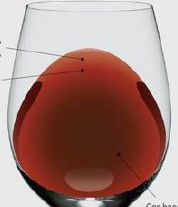 |
Propriedades a observar na fase visual
- Qualidade: Límpido, Cristalino
- Defeitos: Empoado, Turvo, Muito turvo
- Viscosidade: Pouca lágrima, Muita lágrima
As Lágrimas do Vinho
A "lágrima" do vinho, também conhecida como "pernas" ou "arco", refere-se às gotas que escorrem pelas paredes internas da taça após o vinho ser agitado. Essas lágrimas não indicam qualidade, mas sim aspectos físicos do vinho, sobretudo teor alcoólico e, em alguns casos, concentração de açúcar residual.
O que causa as lágrimas?
O fenômeno é explicado pelo efeito Marangoni:
- O álcool evapora mais rápido que a água.
- Ao se acumular na borda da taça, o álcool se volatiliza, aumentando a tensão superficial do líquido restante.
- Essa diferença faz com que o líquido suba pelas paredes da taça e forme gotas, que depois escorrem.
Relação com o álcool e o açúcar
| Característica da Lágrima | Interpretação |
|---|---|
| Muitas lágrimas | Teor alcoólico mais elevado |
| Poucas lágrimas | Teor alcoólico baixo ou médio |
| Escorrem lentamente | Pode indicar maior viscosidade, por álcool ou açúcar |
| Escorrem rapidamente | Vinho mais leve, com menos álcool ou açúcar |
Observações detalhadas:
- Álcool é o principal fator. Um vinho com ≥ 13,5% tende a formar mais lágrimas e estas escorrem mais devagar devido à maior viscosidade.
- Açúcar residual (vinhos doces) também aumenta a viscosidade e contribui para lágrimas espessas e lentas.
- Em vinhos secos com baixa graduação alcoólica (≤ 12%), as lágrimas são geralmente poucas, finas e rápidas.
- A temperatura do vinho afeta o fenômeno: lágrimas são menos visíveis se o vinho estiver muito frio (menor volatilização do álcool).
As lágrimas não revelam aromas, sabores ou equilíbrio, nem servem para definir se um vinho é "bom". Elas apenas ajudam o degustador a confirmar sensorialmente se há álcool ou açúcar em níveis percebidos no olfato e no paladar.
Análise Olfativa
Aromas Primários (Varietais)
Os aromas primários ou Varietais são muito característicos e identificáveis nos vinhos procedentes de variedades muito fragrantes. Entre estes aromas primários predominam as séries florais, frutada, mineral, ou, por vezes de especiarias.
Ex: Moscatel, Malvasia, Sauvignon Blanc, Verdelho, Riesling, Gewürztraminer
Aromas Secundários
Os aromas secundários provenientes das leveduras, da transformação do açúcar em álcool ou da fermentação Maloláctica. São os mais frequentes e abundantes em todos os vinhos. Entre eles, aromas das flores (incluindo o mel), das frutas (verdes, maduras ou em compotas), das especiarias, das notas vegetais, etc.
Aromas Terciários (Bouquet)
Para os aromas de Estágio (aromas terciários) ou Bouquet, as gamas multiplicam-se: séries floral, frutada, mel, compota, madeira e balsâmica, empireumática: café torrado, chocolate, pimento verde, fruta cozida, borracha queimada e outros aromas quentes ou inclusive ardentes, especiarias, animal e química.
Vinhos Brancos
Aromas Primários (provenientes diretamente da uva e do terroir)
Frutados: Maçã verde, Pêra, Pêssego, Damasco (fresco), Ananás (abacaxi), Maracujá, Limão, Lima, Toranja, Melão, Banana (em algumas castas tropicais)
Florais: Flor de laranjeira, Camomila, Acácia, Tília, Jasmim, Rosa branca
Herbáceos / Vegetais: Relva cortada, Espargos, Ervilha, Folha de tomate, Tisana, Chá verde, Eucalipto fresco
Minerais / Outros: Giz, Silex (sílex), Pedra molhada, Nafta / querosene (especialmente em Riesling evoluído)
Aromas Secundários (resultantes dos processos de fermentação)
Fermentação alcoólica / Leveduras: Banana (aroma amílico, jovem), Rebuçado de frutas, Pão fresco, Biscoito, Brioche, Massa de bolo
Fermentação maloláctica: Manteiga, Nata, Iogurte, Creme
Autólise de leveduras (espumantes): Massa de pão, Pão de forma, Biscoito amanteigado
Madeira nova: Baunilha, Coco, Cravo-da-índia, Canela, Noz-moscada, Fumo leve
Aromas Terciários (desenvolvidos durante o envelhecimento)
Frutados Evoluídos: Maçã cozida, Damasco seco, Frutas cristalizadas, Compotas
Florais Evoluídos: Flores secas, Rosa murcha
Notas oxidativas: Mel, Praliné, Caramelo, Cera de abelha, Pasta de amêndoas
Empireumáticos / Balsâmicos: Caramelo queimado, Café, Tabaco leve, Cedro, Resina
Vinhos Tintos
Aromas Primários (diretamente provenientes da uva e terroir)
Frutados: Morango, Framboesa, Cereja, Groselha, Amora, Mirtilo, Ameixa preta, Figo fresco
Florais: Violeta, Rosa, Peónia
Herbáceos / Vegetais: Pimento verde, Folha de tomate, Chá preto, Ervas secas, Tomilho, Louro
Especiarias frescas: Pimenta preta, Alcaçuz, Noz-moscada leve
Aromas Secundários (decorrentes da fermentação e estágio em madeira)
Fermentação maloláctica: Creme, Leite, Manteiga (raro, mais perceptível em tintos leves)
Madeira nova e estágio: Baunilha, Coco, Cravo, Canela, Noz-moscada, Cedro, Fumo, Chocolate amargo, Café torrado, Carvalho tostado
Empireumáticos leves (da tosta da madeira): Pão torrado, Açúcar queimado, Cacau
Aromas Terciários (provenientes da evolução do vinho com o tempo)
Frutas Evoluídas: Ameixa seca, Figo seco, Frutos negros em compota, Ginja em licor, Uva passa
Vegetais / Terrosos: Cogumelo, Trufa, Floresta molhada, Terra
Animal: Couro, Carne crua, Pêlo molhado, Sangue seco, Caça
Empireumáticos Intensos: Tabaco seco, Alcatrão, Fumo, Borracha queimada, Café forte, Cacau, Torrada queimada
Madeira velha e bálsamos: Cedro velho, Resina, Eucalipto, Bálsamo
Químicos (em níveis baixos ou defeitos): Verniz, Dissolvente, Cera, Medicinal
Análise Gustativa
A boca deve confirmar as impressões olfativas. Observa-se:
- O ataque: Primeira sensação na língua (doçura, álcool, frescura)
- O meio de boca: Textura, corpo, taninos
- O final: Persistência aromática e equilíbrio
Um vinho desequilibrado pode revelar excessiva doçura, acidez ou taninos sem suporte aromático.
Parâmetros a observar na análise gustativa
- Secura ou doçura
- Acidez
- Álcool
- Adstringência
- Intensidade
- Corpo
- Final de boca
Defeitos do Vinho
Nariz Oxidado
Todos os vinhos perdem frescura e ganham progressivamente um cheiro chato ou bolorento, com cheiros de maçã tocada e xerez fino, no caso dos vinhos brancos, e agri-doces e caramelos, nos tintos.
Sabor Oxidado
Tal como o cheiro – cansado, chato, duro nos brancos, doce e azedo nos tintos.
Volátil
O termo refere-se tanto ao cheiro do ácido acético (vinagre), como ao que lhe está associado. Os dois podem ocorrer simultaneamente ou separadamente.
- Ácido acético – dá aos vinhos o cheiro azedo do vinagre, com sabor magro e aguçado.
- Acetato etílico – cheira a verniz para as unhas, solventes químicos, cola. Torna o vinho rijo e picante no paladar, especialmente no fim.
Ambos surgem pela contaminação do vinho com bactérias acéticas que degradam o álcool produzindo ácido acético e gás carbónico.
SO₂ (Dióxido de Enxofre)
O SO₂ protege o vinho do oxigénio. Quando tem demasiada presença pode ser cheirado, como uma baforada acre de um fósforo apagado, e sentido como picante no cimo do nariz e parte detrás da garganta. Pode ser dissipado por uma decantação em "jorro" ou fazendo o vinho girar vigorosamente no copo. Tolerância variável de pessoa para pessoa.
H₂S (Sulfito de Hidrogénio)
O enxofre "reduzido" (combinado com o hidrogénio) produz cheiros desagradáveis a ovos estragados e borracha queimada. Se é um mau cheiro suave (redução de garrafa), o arejamento pode removê-lo. Se é extremo, produz mercaptanos, cheirando a alho, cebola, esgoto. Nada a fazer! Produzido por leveduras em mostos com baixo teor de azoto.
Com rolha — TCA (Tricloroanisol)
Os Tri e os Tetracloroanisóis (TCA) e o Tribromoanisol (TBA) têm um aroma bem conhecido: "a rolha", bolor, mofo, umidade, bafio.
Causa: Tem origem no ataque de fungos existentes na rolha de cortiça natural aos derivados do cloro (cloroanisóis) usado na lavagem e branqueamento de rolhas. O TBA tem origem no ataque de fungos aos derivados de bromo usado na desinfecção de madeiras por vezes utilizadas na fabricação de adegas e caves. Ambos têm um limiar de perceção muito baixo e são um dos principais defeitos do vinho engarrafado ou não. Mascara a fruta do vinho, seca e encurta-lhe o sabor.
Torna-se mais evidente quanto mais tempo a garrafa estiver aberta.
Brett (Brettanomyces)
Aroma a couro, cabedal, marroquinaria, animal, suor, cavalo, estrebaria, pocilga, pêlo de cabra. A níveis baixos imprime complexidade.
Contaminação das uvas, vinho, equipamento ou barricas de estágio com leveduras Brettanomyces que produzem tetrahidropiridinas (4-etil fenol, 4-vinil fenol). Baixos teores de SO₂ e armazenagem a altas temperaturas facilitam a ocorrência.
Vocabulário da Degustação: Doçura e Acidez
Descrever um vinho não é apenas registrar sensações gustativas: é também escolher palavras que transmitam se essas características são agradáveis ou indesejadas, e em que medida estão equilibradas. O mesmo atributo — como a doçura ou a acidez — pode ser considerado defeito ou virtude, dependendo do estilo do vinho.
A doçura do vinho
A perceção da doçura está diretamente ligada à presença de açúcares residuais e também à perceção gustativa influenciada pelo álcool e glicerol.
Vocabulário elogioso
Quando equilibrada com frescor e acidez, a doçura é positiva: "aveludado, cremoso, guloso, untuoso, suave, melado, maduro".
- Exemplo: um Moscatel de Setúbal pode ser descrito como "untuoso, guloso e aveludado, com notas de mel e laranja cristalizada".
- Exemplo: um Sauternes botritizado é um "néctar dourado, doce e fundido, sem nunca ser pesado".
Vocabulário pejorativo
Quando a doçura é excessiva ou deslocada, surgem termos como "açucarado, enxaropado, mole, pesado, agridoce, adocicado".
- Exemplo: num vinho verde de entrada de gama, a perceção de açúcar sem equilíbrio pode ser chamada de "adocicada" ou "pesada".
A palavra "melado" pode ser elogio em vinhos de sobremesa, mas crítica severa num vinho que deveria ser seco.
A acidez
A acidez é vital para a estrutura, frescor e longevidade do vinho. É como a espinha dorsal que sustenta todo o conjunto.
Vocabulário elogioso
Vinhos equilibrados têm acidez descrita como "fresca, viva, nervosa, vigorosa".
- Exemplo: um Alvarinho de Monção e Melgaço pode ser descrito como "nervoso e fresco, com final cítrico vibrante".
- Exemplo: um Riesling alemão Kabinett pode ser elogiado por sua "acidez viva que equilibra a doçura natural".
Vocabulário pejorativo
- Por falta: vinho "mole, magricela, sem nervo". Isso acontece em vinhos brancos muito maduros ou mal conservados.
- Por excesso: termos como "azedo, metálico, cortante, acre, agressivo" são comuns em vinhos jovens de regiões frias ou de uvas colhidas antes da maturação ideal.
- Exemplo: um tinto de clima frio e colheita precoce pode ser chamado de "verde e esganiçado".
Acidez volátil
A acidez volátil resulta da presença de ácido acético e outros compostos. Em doses baixas, pode dar vivacidade; em excesso, indica defeito.
- Vocabulário pejorativo: "acético, avinagrado, picado, alterado".
- Exemplo: um vinho guardado em condições ruins pode apresentar "nariz picado, lembrando vinagre".
Vocabulário: Taninos, Textura e Salgado
A sensação salgada
O gosto salgado é raro, mas pode ocorrer:
- Em vinhos de regiões com solos ricos em minerais (como alguns Assyrtiko de Santorini)
- Em vinhos de influência marítima (como Albariños da Galícia)
Vocabulário elogioso: "salgado, fresco, marinho, mineral".
Exemplo: um Verde Atlântico pode ser descrito como "fresco e salgado, lembrando brisa marinha".
Vocabulário pejorativo: "detergente", quando a sensação é artificial ou desagradável.
Os taninos: força e delicadeza
Nos tintos, os taninos são fundamentais. Eles dão estrutura, textura e longevidade.
Força Taninosa
Vocabulário elogioso: "estruturado, sólido, fundido, saboroso".
Exemplo: um Douro Reserva pode ser elogiado por sua "estrutura sólida e taninos fundidos".
Vocabulário pejorativo (falta): "oco, amorfo, sem estrutura".
Vocabulário pejorativo (excesso): "áspero, adstringente, rústico, carregado".
Exemplo: um tinto barato e mal elaborado pode ser descrito como "rude e áspero".
Delicadeza Taninosa
Vocabulário elogioso: "tanino fino, gordo que se mastiga, redondo".
Exemplo: um Pinot Noir da Borgonha é clássico por taninos finos e delicados.
Vocabulário pejorativo: "áspero, rugoso, grosseiro".
Exemplo: tintos jovens com engaço mal manejado.
As sensações tácteis
Comparar a textura dos vinhos a tecidos ajuda a transmitir a sensação tátil deixada na boca.
Vocabulário elogioso: "seda, veludo, cetim, algodão" → remetem a suavidade e prazer.
Exemplo: um Merlot de Pomerol pode ser descrito como "macio como veludo".
Vocabulário pejorativo: "lã, juta, sarja" → remetem a rusticidade ou secura desagradável.
Exemplo: um vinho tinto de baixo custo, com taninos verdes, pode ser comparado a "juta".
A qualidade aromática na boca
Mesmo após a deglutição, alguns vinhos deixam uma persistência aromática longa (P.A.L.).
Vocabulário elogioso: "maduro, vegetal elegante, abaunilhado, saboroso de madeira".
Exemplo: um Chardonnay barricado pode ser dito "maduro, abaunilhado e saboroso de madeira bem integrada".
Vocabulário pejorativo: "sabor a aguardente, sabor a engaço", que indicam falha.
Exemplo: num vinho tinto jovem com engaço mal manejado, pode-se dizer que tem "sabor a engaço, vegetal cru".
Conclusão
O vocabulário do vinho é um instrumento de precisão: permite comunicar não apenas o que se sente, mas também como se avalia essa sensação.
- Um vinho pode ser doce e aveludado (elogio num licoroso), mas também doce e enjoativo (crítica num vinho que deveria ser seco).
- A acidez pode ser fresca e nervosa (virtude em brancos jovens), mas também ácida e esganiçada (defeito em tintos verdes).
- Os taninos podem ser sedosos como veludo (em grandes vinhos), ou ásperos como juta (em vinhos mal vinificados).
Essa riqueza de expressões amplia o repertório do degustador, ajudando a comunicar a experiência de forma clara, técnica e até poética.
Tabelas de Vocabulário
1. Doçura
| Situação | Vocabulário elogioso | Vocabulário pejorativo | Exemplos |
|---|---|---|---|
| Doçura equilibrada (vinhos de sobremesa, licorosos, brancos suaves bem feitos) | Aveludado, guloso, untuoso, cremoso, suave, fundido, melado | — | Moscatel de Setúbal, Sauternes botritizado, Porto Tawny 20 anos |
| Doçura em excesso ou deslocada (vinhos secos que parecem doces demais) | — | Açucarado, enxaropado, mole, pesado, agridoce, adocicado | Vinhos verdes baratos com açúcar residual, Lambrusco doce industrial |
2. Acidez
| Situação | Vocabulário elogioso | Vocabulário pejorativo | Exemplos |
|---|---|---|---|
| Acidez equilibrada, refrescante | Fresco, nervoso, vivo, vigoroso | — | Alvarinho de Monção e Melgaço, Riesling alemão Kabinett, Vinho Verde Loureiro |
| Falta de acidez (vinhos "moles") | — | Mole, insosso, magricela, sem nervo | Chardonnay muito maduro do Novo Mundo |
| Excesso de acidez (desequilibrado) | — | Azedo, acre, cortante, esganiçado, agressivo | Tinto de colheita precoce de região fria, branco verde em excesso |
| Acidez volátil (defeito) | — | Acético, avinagrado, picado, alterado | Vinhos mal conservados ou mal vinificados |
3. Salgado
| Situação | Vocabulário elogioso | Vocabulário pejorativo | Exemplos |
|---|---|---|---|
| Salinidade agradável | Fresco, salgado, marinho, mineral | — | Albariño galego, Assyrtiko de Santorini, Verde Atlântico |
| Sensação desagradável | — | "Detergente" | Vinhos defeituosos ou com notas químicas |
4. Taninos
| Situação | Vocabulário elogioso | Vocabulário pejorativo | Exemplos |
|---|---|---|---|
| Estrutura equilibrada | Estruturado, sólido, fundido, saboroso | — | Douro Reserva tinto, Barolo (Nebbiolo) |
| Taninos em falta | — | Oco, amorfo, sem forma, sem estrutura | Tintos leves mal elaborados |
| Taninos em excesso | — | Seco, rude, rústico, carregado, adstringente | Tintos baratos com extração exagerada |
| Taninos delicados e finos | Tanino fino, fundido, gordo que se mastiga | — | Pinot Noir da Borgonha, Merlot de Pomerol |
| Taninos grosseiros | — | Áspero, rugoso, grosseiro | Tintos jovens com engaço mal manejado |
5. Sensação Táctil (Textura)
| Situação | Vocabulário elogioso | Vocabulário pejorativo | Exemplos |
|---|---|---|---|
| Textura macia e agradável | Seda, veludo, cetim, algodão | — | Merlot de Saint-Émilion, Touriga Nacional madura do Dão |
| Textura rústica e agressiva | — | Lã, juta, sarja | Tintos de baixo custo com taninos verdes |
6. Qualidade Aromática em Boca (Persistência)
| Situação | Vocabulário elogioso | Vocabulário pejorativo | Exemplos |
|---|---|---|---|
| Aromas integrados e elegantes | Vegetal elegante, metálico equilibrado, maduro, abaunilhado, saboroso de madeira | — | Chardonnay barricado da Borgonha, Reserva do Douro |
| Aromas desagradáveis | — | Sabor a aguardente, sabor a engaço | Vinho com graduação alcoólica alta e mal integrada; tinto jovem com engaço cru |
Como Usar os Termos
- O mesmo termo pode ser elogio ou crítica, dependendo do contexto.
- "Melado" → positivo em Moscatel, negativo em Vinho Verde.
- "Cortante" → positivo em um branco fresco, negativo em um tinto desequilibrado.
- Sempre compare a palavra escolhida ao tipo de vinho e ao estilo esperado.